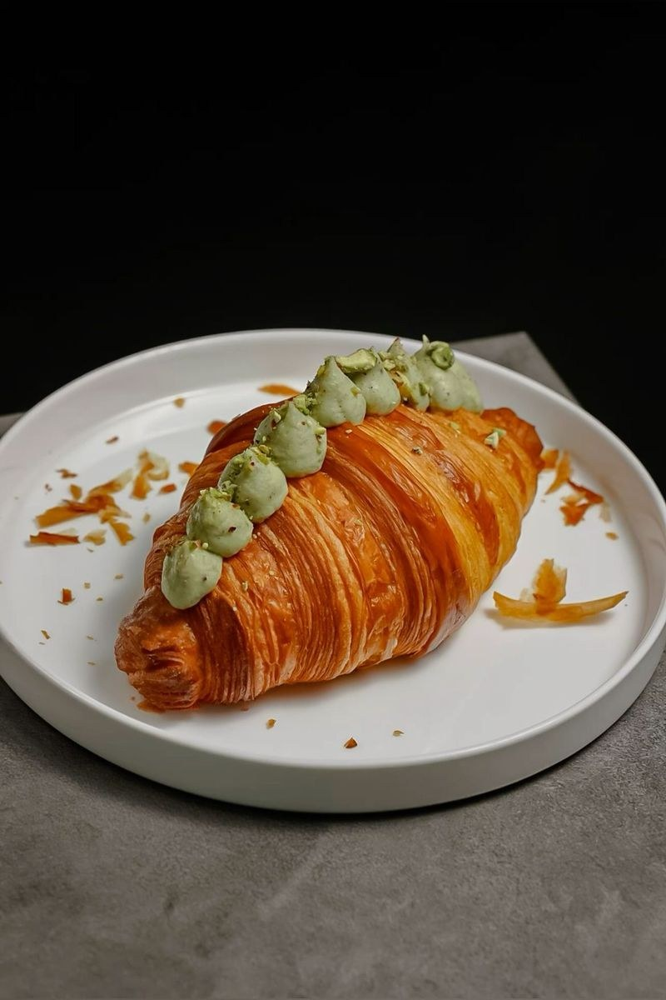
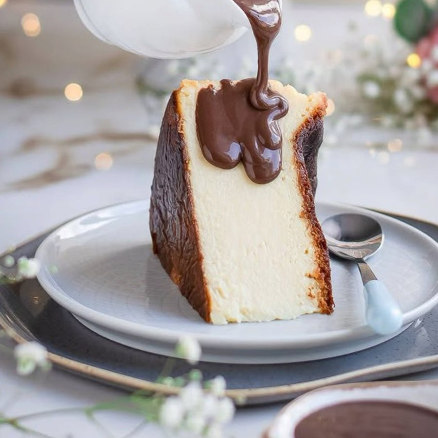
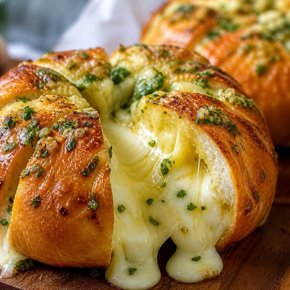
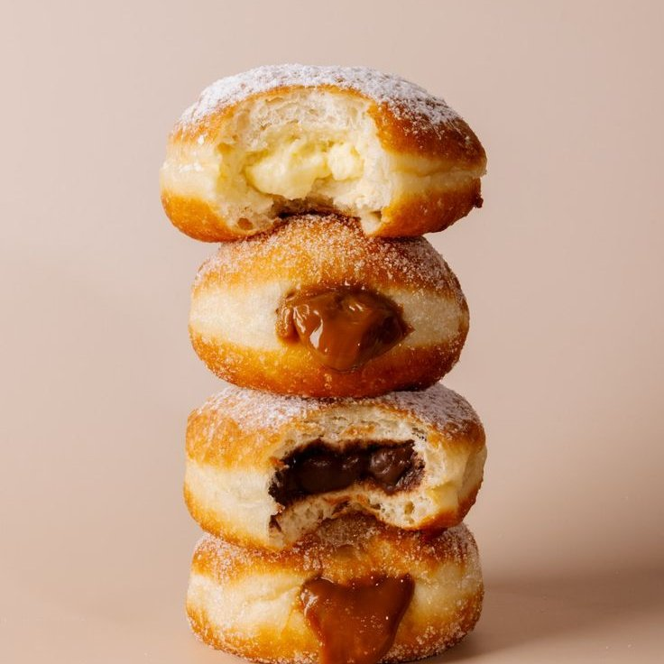
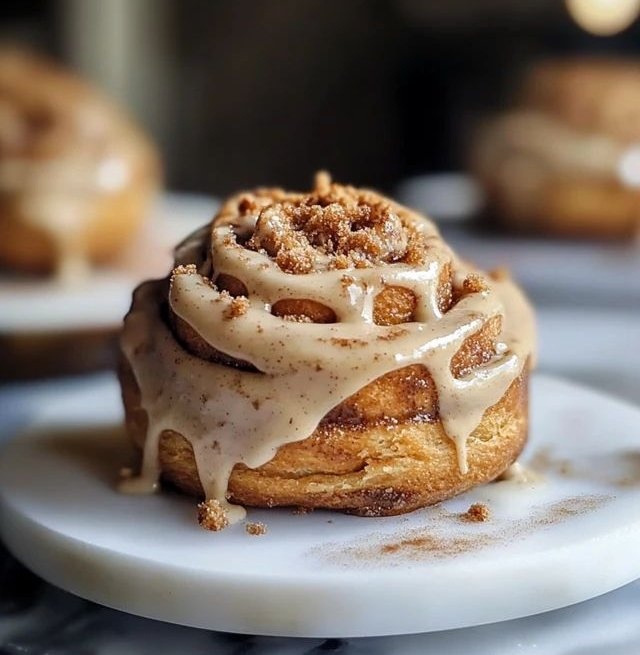

Pistachio Croissant
Laminated over three days, baked to a shatter, and piped to order the moment it cools.
A small-batch bakery presenting its work the only honest way — baked the same morning you see it. Laminated pastry, slow-fermented bread, coffee dialled in fresh.
Fresh out at 8:00 AM Small batch, daily @croustille.in
Five pieces of work we stand behind. Made in small batches, sold until they're gone — when it's gone, it's gone.

Laminated over three days, baked to a shatter, and piped to order the moment it cools.

Burnt on top, molten in the middle. Baked hot and fast the Basque way.

Scored, soaked in herb-garlic butter and packed with cream cheese. Savoury, and gone by noon.

Sugar-rolled and piped to order — vanilla custard, dulce de leche or dark chocolate.

Brown sugar folded through the dough, glazed with cream cheese while it is still warm.
02 — The film
Act I — The Berliner Dulce de leche poured over sugar-rolled stacks, custard piped to order.
Act II — The Cheesecake Caramel run slow over a biscuit-crumb base.
Scroll runs the film, forwards and back
We are a small kitchen with a stubborn habit: everything gets made the slow way.
Dough is fermented overnight, butter is laminated by hand, and coffee is dialled in fresh each morning before the first cup is poured.
Nothing sits overnight. What doesn't sell that day doesn't come back the next — which is why the counter looks a little different every time you walk in.
The first trays land at eight, the second run after lunch.
Lamination you can hear when the crust gives way.
Espresso and filter, ground to order — never a syrup.
“The sweetest part of the soft launch wasn't the desserts — it was your feedback. Thank you for making Croustille feel like home.”
★★★★★“Tried the Coconut Bun — absolutely exceptional. Compliments to the whole team, I'll be back this week.”
★★★★★“The San Sebastian cheesecake is the real deal. Burnt top, custardy centre — didn't expect to find this here.”